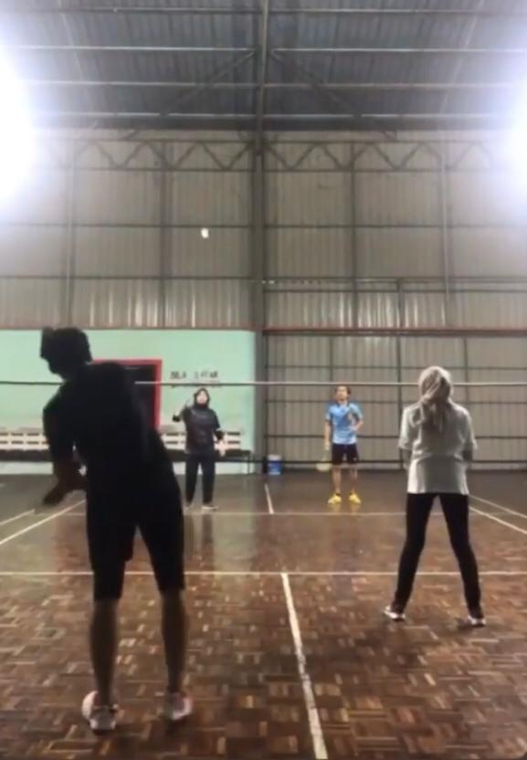
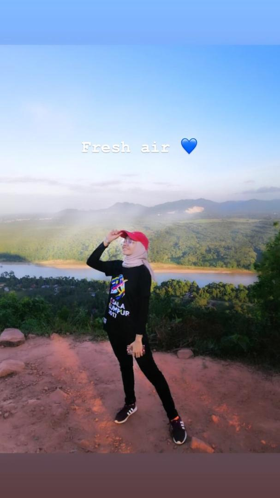
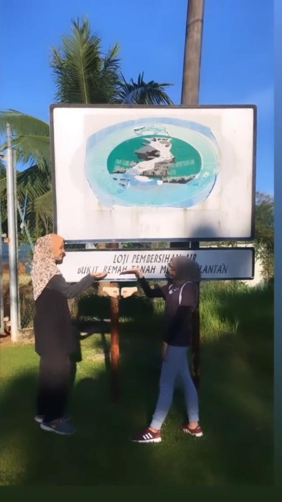

MY PERSONAL PORTFOLIO
BE KIND AND BE GOOD
HOME
MYSELF
PASSION
HOBBIES
LINK
Sport
My hobby is more to sport such as playing badminton with friend. I love to sweating with a good exercise. I can play badminton for 3 to 4 hours because I really can enjoy it. During diploma I am one of UiTM Machang athlete for badminton in Karisma event. For degree I won at 3rd place in badminton tournament in Kota Bharu. For me, badminton is a good sport because, we use a lot of strength to burn back our calories since I am food lover, I think I can balancing back my lifestyle.



Cooking
I really fall in love with food! So I had decided to learn cooking so that I can cook by myself for any food that cross in my mind. In addition as a women, by hook or by crock we must to learn cooking. So it is good for food lovers out there who love food and can cook as well.